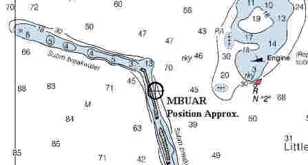

Description:
Schooner; Wood
Dimensions: length
- 79.5 ft. width
- 22.6 ft. depth
- 7.8 ft.
Tonnage: gross - 74 other
-
Propulsion: Sail
Machinery:
Cargo: Paving Blocks
The Shipwreck
Date Sunk: August
30, 1899.
Cause:
Stranded.
Location: Sandy Bay Breakwater (eastern end), Cape Ann.
Coordinates: Latitude,
42o - 40' - 39"N Longitude, 70o - 35' - 25"W
Loran:
It was a foggy evening when the coasting schooner
Edward R. Rich finally left the Cape Ann Granite Company dock, after loading a cargo of
Paving Blocks for Boston purchasers.
While exiting Pigeon Cove harbor she struck the eastern end of Sandy Bay
Breakwater. Striking the rocks hard her hull was badly crushed and soon filled with water.
By morning all but a small portion of the schooner's bow was completely submerged.
Hopelessly damaged she was abandoned to the wreckers.
Back to Top
Dive Site Conditions
Depth in feet: maximum - ; minimum -
Visibility in feet: average
-
Click on the image to go to the MapTech Map Server,
for additional navigation information. 
Back to Top
Historical Background
Constructed: year
- 1867; where - Chelsea,
Massachusetts
builder
-
Construction details: Oak; Iron & Copper Fastenings
Crew: ; Master:
John Paschal
Owners: H.P. Halma.
Home or Hailing Port: Boston, Massachusetts
Former Name(s) and date(s):
Official number: 7097 Country: U.S.A.
Other Comments:
Back to Top
Salvage
Initially wreckers removed her sails and rigging.
Back to Top
Sources:
Boston Globe; August 30, 1899
MapTech
Mapserver
Merchant Vessels of the United States; 1899
The Record, "American Lloyds", American Bureau of Shipping; 1899
Back to Top
These files are under construction. Any
information, specifically dive site related, would be greatfully appreciated.
Send comments to: Chris Hugo
Copyright © 2000 by Christopher C. Hugo
Massachusetts Board of Underwater Archaeological Resources
All Rights Reserved
|